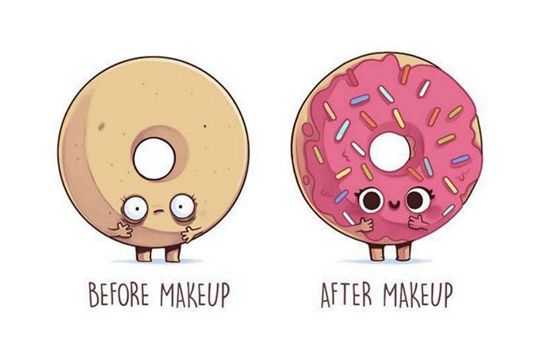

Entrevista a Naolito |
Nacho Díaz, Naolito, gaditano, 31 años, ilustrador e «influencer» (entendiendo por influencer a toda persona que cuenta con credibilidad sobre un tema concreto, cuya presencia en redes le ha convertido en un prescriptor muy deseado por las grandes marcas). Y es que, no nos vamos a engañar, Naolito dentro de la ilustración se ha convertido en un peso pesado, en un referente para muchos jóvenes y no tan jóvenes. Vamos, que la vida de Naolito es de todo, menos aburrida. |
¿Quién es Naolito?Naolito es el nombre tras el que me escondo como ilustrador, completamente por accidente. En tiempos de IRC, teniendo no más de 12-13 años era muy aficionado al modelado 3D (¡aun me encanta!), era el nombre que utilizaba. Mucha gente me pregunta qué significa exactamente Naolito, y me encantaría contar una historia increíble sobre la palabra, pero la verdad es que no recuerdo cómo llegué a ella. Cuando empecé a publicar mis ilustraciones, era la elección lógica, y como nunca pensé que pudiera convertirse en mi profesión, no lo pensé demasiado. Sin embargo, 10 años después, ¡ahí sigue! Y ¿Quién es Nacho? ¿El monstruo se ha comido al creador o de momento todo está controlado y medido?Durante muchos años me he escondido detrás de Naolito y no he dejado que Nacho apareciera por ningún sitio, pero es algo que estoy cambiando a medida que me voy sintiendo cómodo con el alcance que tiene mi trabajo. La interacción con mis seguidores en redes sociales me ha permitido apreciar la suerte que tengo, y es por ello que poco a poco Nacho va quitando terreno a Naolito. ¿Incluso mi mascota es un Nacho con guacamole! Diez años haciendo el camino andando, dibujando para marcas, luego para tu propia marca y ahora con tiendas físicas. ¿qué tal la vida de joven «entrepreneur»? ¿Sientes que estás donde querías estar?Mentiría si dijera que tenía un plan desde un principio, mi situación actual ni me la imaginaba, ni soñaba con ella. En un principio mi trabajo consistía en adaptarme a las circunstancias del mercado y de cada momento. Cuando empiezas sientes una falta de libertad autoimpuesta, o así era en mi caso, que te hace intentar adaptarte a las tendencias de concursos y clientes. Pero cuando te sales de esas tendencias, es cuando empiezas a conseguir cosas importantes. Seguir tendencias quiere decir que siempre vas a ir por detrás de ellas, y que vas a atacar al mismo objetivo que todo el mundo. Es por ello que no participo en #inktober y movimientos similares, es fácil perderte en la masa. Además cuando ese tipo de movimientos están en marcha el público está saturado de ese tipo de contenido, por lo que es una gran oportunidad para ofrecer algo diferente. No quiere decir que tengas que reinventar la rueda cada vez, pero sí dar razones a tu público para seguirte a ti y no a otro ilustrador. Incluso cuando haces algo que funciona, y creas tu propia tendencia, no puedes estancarte ahí, tienes que tratar de crear algo nuevo. Es mejor dejar con ganas, que saturar. |
|